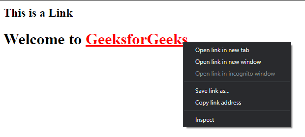

- HTML tags and elements are not the same thing.
HTML tags are used to hold the HTML element. HTML element holds the content.
HTML attributes are used to describe the characteristic of an HTML element in detail. Whatever written within a HTML tag are HTML elements.
HTML element is the collection of start tag, its attributes, an end tag and everything in between.
On the other hand an HTML tag (either opening or closing) is used to mark the start or end of an element, as you can see in the above illustration.

- The main difference between tag and attribute is that a tag is a way of representing an HTML element in the program,
while an attribute is a way of describing the characteristics of an HTML element.
- HTML contains various elements to build the content. Elements such as paragraph, horizontal lines and headings are used to
develop the structure of all webpages. Programmer cannot write these elements directly on the website. He has to use tags to write specific elements to the webpage. Most elements have a start tag and an end tag. In other words, the elements are enclosed within the start and end tag. Furthermore, elements such as line break and horizontal line do not have close tags. Few example HTML elements with tags are as follows.
- An attribute provides extra information about an HTML element. It has two sections: the name of the attribute and the value of that attribute. The name defines the property that we require to set, while the value is a property that defines the value of that property. The programmer can write the value inside quotations.
- Most of the HTML elements are surrounded by start and end tags to specify the starting and end of the element.
There is a special group of elements that only have start tags and does not contain any content within it, these elements are called void elements. Void elements doesn’t have ending tags and can only have attributes but do not contain any kind of content. These elements can have backslash before ending of start tag but that is completely optional. Example of such elements are <br >, <hr >, <img >, <input >, <link > <base >, <meta >, <param > , <area >, <embed >,
< col >, <track > <source > etc.
- HTML character entities are used as a replacement of reserved characters in HTML. You can also replace characters that are not present on your keyboard by entities. These characters are replaced because some characters are reserved in HTML. HTML entities provide a wide range of characters which can allow you to add icons, geometric shapes, mathematical operators, etc.
- For example: if you use less than (<) or greater than (>) symbols in your text, the browser can mix them with tags that's why character entities are used in HTML to display reserved characters.
- HTML lists allow the content to follow a proper semantic structure. All the tags in the list require opening and closing tags. There are 3 types of lists in HTML, namely:
- The class attribute specifies one or more classnames for an element.
The class attribute is mostly used to point to a class in a style sheet. However, it can also be used by a JavaScript (via the HTML DOM) to make changes to HTML elements with a specified class.
- The class attribute is part of the Global Attributes, and can be used on any HTML element.
- The only difference between them is that “id” is unique in a page and can only apply to at most one element, while “class” selector can apply to multiple elements.
- HTML Formatting is a process of formatting text for better look and feel. HTML provides us ability to format text without using CSS. There are many formatting tags in HTML. These tags are used to make text bold, italicized, or underlined. There are almost 14 options available that how text appears in HTML and XHTML.
- In HTML the formatting tags are divided into two categories:
- Physical tag: These tags are used to provide the visual appearance to the text.
- Logical tag: These tags are used to add some logical or semantic value to the text.

- cellpadding and cellspacing are the two attributes used for formatting table cells. Both cellpadding and cellspacing are used to insert whitespaces in the table cells. The most basic difference between cellpadding and cellspacing is that the cellpadding is used to set the whitespace between cell edge and cell content, whereas cellspacing is used to set the whitespace between two cells.
- It can be done by using the rowspan and colspan attribute in HTML. The rowspan is used to merge or combine the number of cells in a row whereas the colspan is used to merge column cells in a table.
- Block elements: They consume the entire width available irrespective of their sufficiency. They always start in a new line and have top and bottom margins. It does not contain any other elements next to it.


- Inline elements: Inline elements occupy only enough width that is sufficient to it and allows other elements next to it which are inline. Inline elements don’t start from a new line and don’t have top and bottom margins as block elements have.


- To make a hyperlink in an HTML page, use the and tags, which are the tags used to define the links. The < a> tag indicates where the hyperlink starts and the </a> tag indicates where it ends. Whatever text gets added inside these tags, will work as a hyperlink. Add the URL for the link in the < a href=” ” >.
- An inline frame (iframe) is a HTML element that loads another HTML page within the document. It essentially puts another webpage within the parent page. They are commonly used for advertisements, embedded videos, web analytics and interactive content.
- In HTML, the span tag is a generic inline container element. Span tags usually wrap sections of text for styling purposes or for adding attributes to a section of text without creating a new line of content.


- To set the background image of a webpage, use the CSS style. Under the CSS < style > tag, add the property background-image. The property sets a graphic such as jpg, png, svg, gif, etc. HTML5 do not support the < body > background attribute, so CSS is used to change set background image.
- Websites are designed to point you to different resources. You can move from one website to another through links. Links help you to get information from different resources. Links are established in simple HTML web pages through < a > tag. Links are categorized into three types. Typically a Link is displayed in three different colors based on the usage.
- Normal links (Unvisited links)
- Visited links
- Active links
Normal Link
The following example shows the basic example for Normal Link ( Unvisited Link ). If you want to create a link to go to “https://www.geeksforgeeks.org/“, you can get the normal link through this code. The default color is blue color and underlined but you can apply your own custom styling according to the application’s need.
Visited Link
In example 1, If you click on the link shown above and again go back to the link page, you can now see the link is in purple color and underlined. It shows that the user has visited this link before.
Active Link
In example 1, If you left or right-click any one of the links Visited or Unvisited, it will turn into Red and Underline. Active Links shows that the browser is in the process to load a new resource.
- There are three tags that can be used to separate the texts:
- < br > tag – Usually < br > tag is used to separate the line of text. It breaks the current line and conveys the flow to the next line.
- < p > tag – This contains the text in the form of a new paragraph.
- < blockquote > tag – It is used to define a large quoted section.
SVG stands for Scalable Vector Graphics. SVG defines vector-based graphics in XML format.
- HTML and XHTML are two of the most popular markup languages used for developing web pages and applications. HTML is the standard markup language for creating web pages, while XHTML is a stricter and more standardized version of HTML. Both HTML and XHTML include a wide range of features, such as support for multimedia, styling, and scripting. HTML and XHTML both have features to create rich and interactive web pages and applications. Some of the most popular HTML and XHTML features include:
Support for multimedia: Both HTML and XHTML support various forms of multimedia, such as images, video, and audio. HTML also supports animated images and graphics.
Styling: Both HTML and XHTML offer a wide range of options for styling web pages. CSS (Cascading Style Sheets) is the most commonly used style sheet language, and it can be used to style both HTML and XHTML documents.
Scripting: HTML and XHTML both support various forms of scripting, such as JavaScript. Scripting can be used to add interactivity to web pages and applications.
Forms: Forms are one of the most important features of HTML and XHTML. Forms allow users to input data, which can then be processed by a server-side script.
Tables: Tables are another important feature of HTML and XHTML. Tables can be used to display tabular data, such as product information or financial data.
Links: Links are one of the most basic features of HTML and XHTML. Links allow users to navigate between web pages.
Metadata: Metadata is information about a web page or document. It can include information such as the author, keywords, and description.
HTML and XHTML are two of the most popular markup languages used for developing web pages and applications. Both HTML and XHTML include a wide range of features, such as support for multimedia, styling, and scripting. HTML is the standard markup language for creating web pages, while XHTML is a stricter and more standardized version of HTML.
- Logical Tag Physical and Logical tags are used in HTML for better visibility and understanding of the text by the user on the web page. However, both tags differ from each other as suggested by their names.
- Physical TagLogical Tags are used in HTML to display the text according to the logical styles. Following are the Logical tags commonly used in HTML.